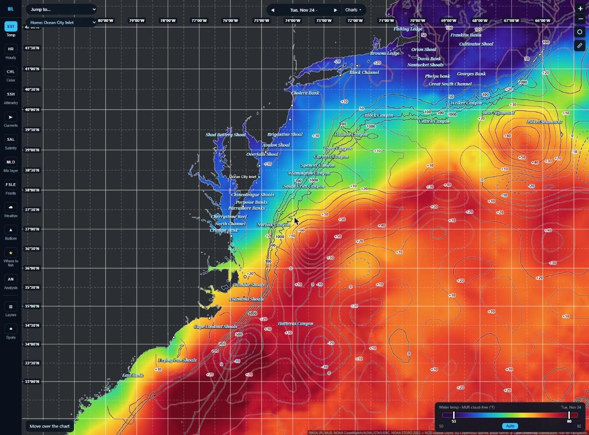
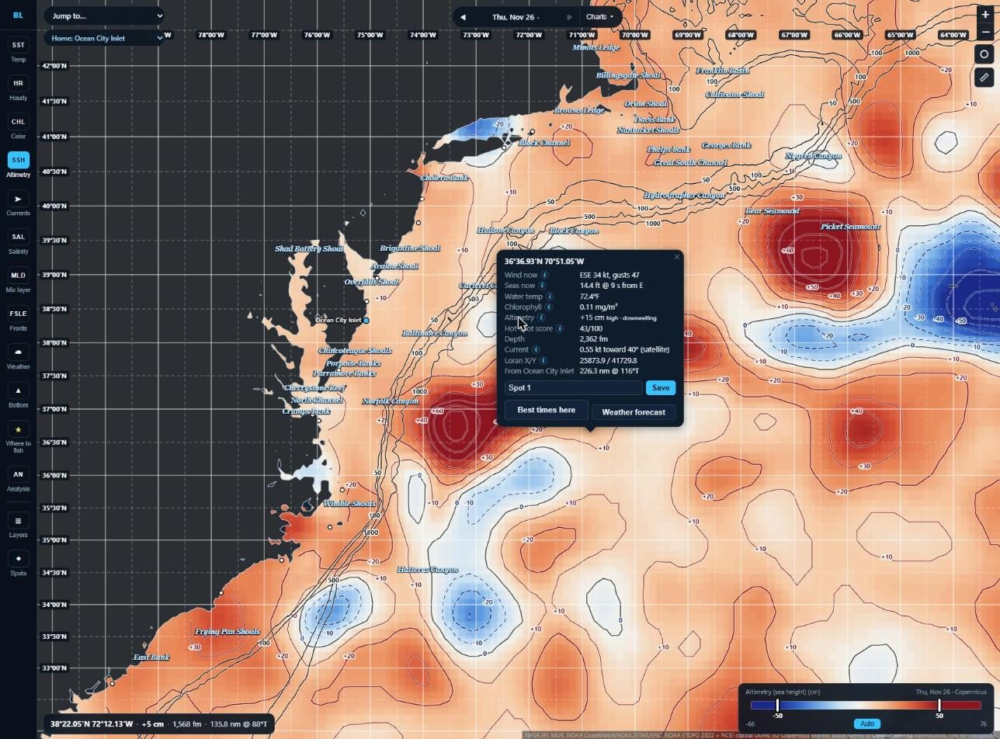
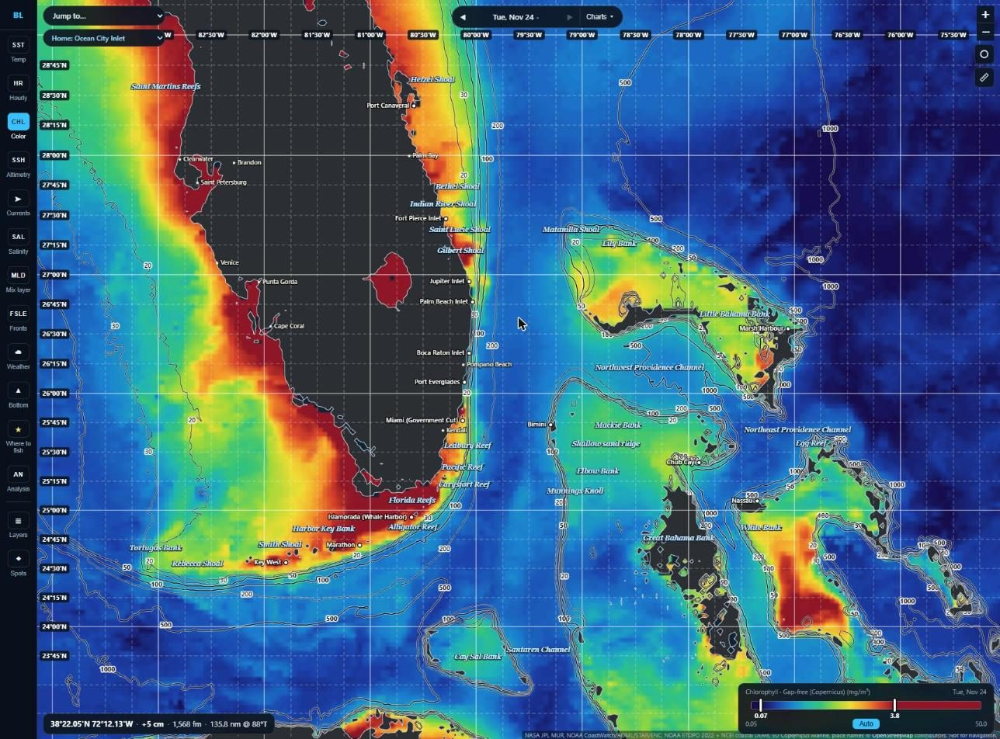
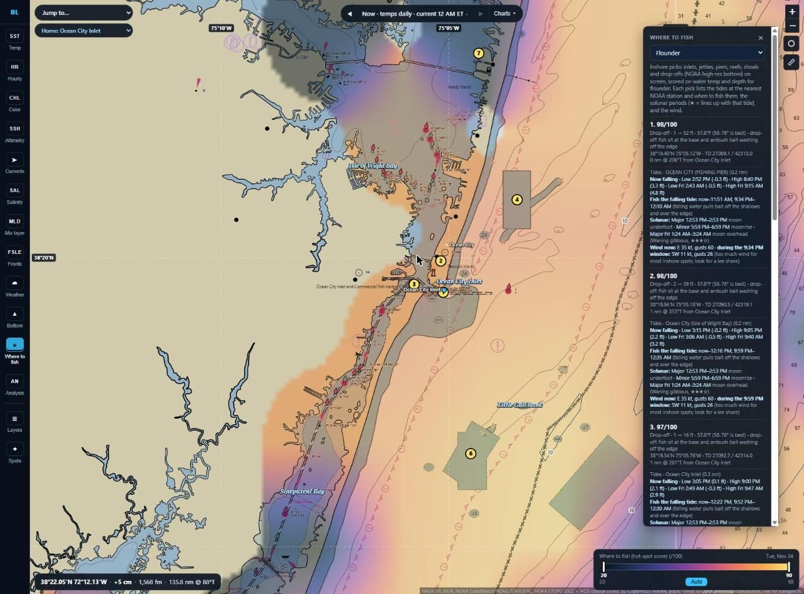

Read the water
Temp breaks, color edges, eddies and current lines, drawn on the chart so the edges jump out. Flip between water temp, color, altimetry and currents to see where they agree.
Satellite fishing charts
Water temperature, color, altimetry and currents on one chart, plus picks for where to fish, offshore and inshore. Built by a fisherman, for the run out of your inlet.
5 days free, then $100 a year. No card needed to start. Works on your phone, tablet and computer.

How it works
Temp breaks, color edges, eddies and current lines, drawn on the chart so the edges jump out. Flip between water temp, color, altimetry and currents to see where they agree.
Choose your species and Where to fish scores every spot inside your run on temp, breaks, color, bottom and eddy edges. Tap anywhere and every reading comes with a plain-English note on what it means.
Wind, seas, tides and the solunar bite windows for the spot. Save it in lat/long or Loran, export to your chartplotter as GPX, and it's on every device you sign in on.

Tap anywhere
Tap the chart and get the water temp, color, altimetry, current, depth, wind and seas at that exact spot, plus the Loran TDs and the distance from your inlet.

Clouds happen
Breakline pulls every new satellite pass for your area and keeps the clear pixels. Hourly GOES scans, the polar passes, and 1-day and 3-day composites that stack every look so clouds don't leave you blind.
The data
Daily cloud-free blend, hourly GOES-19 scans, single polar passes and 1-day and 3-day composites, with breaks outlined automatically.
Blue water against green water, from VIIRS and Sentinel-3 passes plus a gap-free daily blend.
Sea-surface height that shows warm and cold eddies, even under clouds, with the rings drawn on the chart.
Surface current speed and direction, with high-frequency radar near the coast and forecasts up to a week out.
Convergence lines worked out from the currents: where weed, debris and bait get pushed together.
River plumes and the salty edge of the Gulf Stream, often lined up with a color break.
How deep the warm surface layer goes, so you know when to run baits deeper.
Model forecasts of wind, gusts, wave height and period across the whole run, not just the beach.
Shaded relief, depth lines in fathoms offshore and feet inshore, drop-offs, wrecks, reefs and fish havens.
Channels, buoys and soundings drawn in when you zoom in close to the inlet.
An automatic read of the water: numbered breaks, color edges, current edges, eddy centers and a written run plan.
Set your home port, how far you'll run, and the depth, temp, color, current, breaks, mixed layer and salinity you want. Breakline marks every patch that matches.
Record your run. At the end of the day, tell it why you turned and what you caught where, and Where to fish learns the water you catch fish in.
Breakline keeps its own copy of every chart, checked every 10 minutes. When NOAA's servers go down, your charts don't.
Solunar majors and minors, sunrise and sunset, and the tide turns, with the windows where they line up starred.
See a step-by-step tutorial for every feature →

Inshore too
Pick flounder, striped bass, red drum, speckled trout, snook or tarpon and Breakline ranks the inlets, jetties, piers, reefs, shoals and drop-offs on your screen.
Coverage
The chart works anywhere from Maine to Panama. These destinations also get Breakline's own copy of every NOAA chart, checked every 10 minutes, so they load in a second and keep working when NOAA's servers go down.
Cape Cod, Nantucket & the Vineyard · Point Judith · Montauk · Shinnecock · the canyons from Hudson to Atlantis
Manasquan · Barnegat · Cape May · Indian River · Ocean City · Chincoteague · Virginia Beach · the Norfolk and Washington canyons
Oregon Inlet · Hatteras · Morehead City · Wrightsville · Charleston · the Gulf Stream edge
Port Canaveral · Fort Pierce · Jupiter · Palm Beach · Fort Lauderdale · Miami · Islamorada · Marathon · Key West
Clearwater · John's Pass · Boca Grande · Naples
Venice, Louisiana · Pensacola · Orange Beach · Destin · Panama City
Galveston · Freeport · Port O'Connor · Port Aransas · South Padre
Bimini · Chub Cay · Nassau · the Abacos · Bermuda · Turks & Caicos
Puerto Rico · St. Thomas & the North Drop · Tortola · Punta Cana & Cap Cana · St. Lucia · Cancún, Isla Mujeres & Cozumel
Cabo San Lucas · San José del Cabo · East Cape · Magdalena Bay · Puerto Chiapas
Guatemala (Puerto San José) · Costa Rica: Papagayo, Flamingo, Los Sueños, Quepos, Golfito · Cocos Island · Panama: Piñas Bay, Pedasí
Kona · Oahu · Maui · Kauai · San Diego · Dana Point · Newport · Long Beach · Channel Islands · Santa Barbara · Ensenada
Cape Town & Cape Point · Struisbaai · Mossel Bay · Durban & Sodwana · Watamu & Malindi · Pemba Channel · Zanzibar · Bazaruto · Tofo · Ponta do Ouro
Cairns & Lizard Island · Gold Coast · Port Stephens · Sydney · Bermagui & Eden · Portland · Tasmania · Exmouth & Ningaloo · Perth
Pricing
Try it free for 5 days, no card needed. Then it's $100 a year, less than one tank of fuel.
$100/year
About $8.33 a month, billed yearly. Cancel any time.
FAQ
NOAA, NASA and the EU's Copernicus Marine service: the same satellites and ocean models the paid chart services use. Breakline pulls them together, draws the edges and adds the fishing.
Hourly water-temp scans arrive a few hours after the satellite passes; the polar passes and the daily blends are usually from the last day or two. Clouds block the satellites, so Breakline keeps the newest clear look for every spot and tells you how old it is.
Yes. Open it in your phone's browser and add it to your home screen to use it like an app. Recent charts are saved on the phone, so they're still there when you lose signal offshore.
Yes. Show the grid in Loran TDs, lat/long or both, pick your chain, and every saved spot keeps its TDs.
Create an account and you get everything for 5 days, no card needed. When the trial ends, subscribe for $100 a year to keep going. Your saved spots stay in your account either way.
Your spots, home port and settings are saved to your account, so they're on every phone and computer you sign in on.
Yes: the tutorials walk through every feature, step by step, from reading a temp break to setting up a water alert.
No. Breakline is a fishing planning tool. Always navigate with proper charts and your own electronics.
Already have one? Sign in